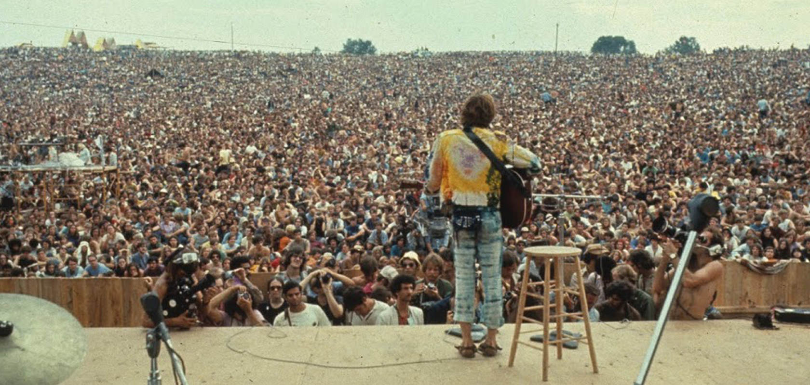
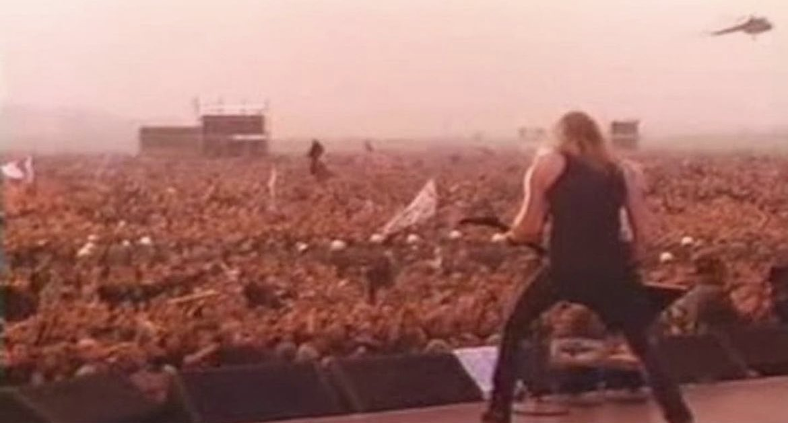

A hangverseny vagy koncert olyan nyilvános és élő klasszikus, könnyű- vagy népzenei előadás, amelyen zenei együttesek, szólóhangszeres vagy vokális művek előadóit, illetve az általuk előadott zeneműveket hallgathatják az érdeklődők.
Woodstock
Az 1969-es Woodstock Fesztivál az ellenkultúra és a béke mozgalom szimbóluma lett. Augusztus 15–18. között zajlott New York államban, Bethel városában. Körülbelül 400 ezer ember gyűlt össze, hogy olyan előadókat hallgasson, mint Janis Joplin, Jimi Hendrix és a The Who. A fesztivál eredetileg jegyes esemény lett volna, de a hatalmas érdeklődés miatt gyakorlatilag ingyenes rendezvénnyé vált. Az infrastruktúra hiánya és az eső miatt a rendezvény kaotikus volt, mégis békésen zajlott.

Monsters of Rock
Az 1991-es Monsters of Rock fesztivál Moszkvában valóban a zenei történelem egyik legikonikusabb eseménye volt. A fesztiválra szeptember 28-án került sor a Tushino repülőtéren, és körülbelül 1,6 millió ember gyűlt össze, hogy olyan legendás zenekarokat hallgasson, mint a Metallica, az AC/DC, a Pantera és a The Black Crowes.

Pink Floyd és Roger Waters
Roger Waters 1990-ben Berlinben adott koncertje, ahol a "The Wall" című albumot játszotta, szimbolikus jelentőségű volt. Bár nem közvetlenül a Szovjetunióban történt, erős hatása volt az akkori szocialista blokk országaira.